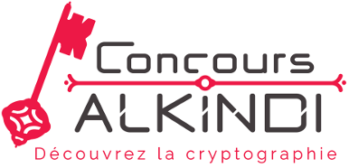

Objectifs

Aujourd’hui, les questions de sécurité des données sont un des enjeux majeur de notre société, que ce soit pour protéger les transactions bancaires ou garantir la protection de la vie privée. Tout cela est rendu possible grâce aux mathématiques et à l’informatique.
Nous souhaitons faire découvrir aux lycéens cette application très concrète des mathématiques, qui joue un rôle énorme dans leur vie quotidienne. Nous voulons leur montrer qu’il est possible de prendre du plaisir en faisant des mathématiques. Enfin, nous souhaitons les sensibiliser à la question importante de la
sécurité de l’information.
Ce concours rentre dans le cadre de la Stratégie mathématiques et du plan École numérique du Ministère de l’Éducation nationale.
établissement français peuvent participer à la
compétition.
Pas du tout. Au contraire, c’est le principe ! Ce concours s’adresse à des gens qui n’ont jamais fait de cryptanalyse. Lors de l’épreuve en temps limité, toutes les informations nécessaires seront contenues dans le sujet.
Le concours est accessible pour tous les élèves de seconde. Lors de la première épreuve, ouverte à tous, chaque question comporte trois niveaux de difficulté. Ainsi, chaque participant peut s’amuser à résoudre des défis adaptés à son niveau. La difficulté augmente lors des tours suivants
Pas nécessairement. Si vous avez réussi le brevet c’est que vous avez un niveau en mathématiques suffisant pour pouvoir répondre aux questions.
Il n’y a pas de prérequis autres que le programme de collège. Venez avec l’esprit ouvert, faites preuve de logique et suivez les consignes. Et surtout amusez vous !
La première équipe se verra offrir un ordinateur portable par personne. Les seconds gagneront des tablettes tactiles, les troisièmes des smartphones. Les membres des 25 meilleures équipes nationales ainsi que de la meilleure équipe de chaque académie gagneront des livres de cryptographie. Les équipes gagnantes seront conviées à une cérémonie officielle de remise des prix à Paris.

Jacques Stern est ancien élève de l'Ecole Normale Supérieure (ENS, 1968). Il a obtenu son doctorat à l'Université de Paris 7 (1975) et a été professeur à l'Université de Caen (1979-1986), puis à l'Université de Paris 7 (1986-1992), et enfin, de 1993 à 2007, professeur à l'ENS et Directeur du Département d'informatique, qu'il a fondé en 1999.
Jacques Stern est spécialiste de cryptologie et de sécurité des transactions et des communications électroniques. Il est l’auteur de plus de 100 publications dans des revues scientifiques et d’un livre intitulé « La science du secret » (éditions O. Jacob). Il est titulaire d'une douzaine de brevets. Ses principaux travaux ont porté sur la cryptanalyse et les preuves de sécurité des algorithmes à clé publique, ainsi que sur la conception d'algorithmes de chiffrement adaptés à l’environnement des cartes à microprocesseur.
Jacques Stern a été récipiendaire du prix « Lazare Carnot » de l'Académie des sciences en 2003, de la Médaille d'or du CNRS, plus haute distinction scientifique française, en 2006 et du Prix « RSA Data Security » en 2007. En 2008, il a également reçu le prix « Science et Défense ».
De 2007 à 2010, Jacques Stern a été président de Agence Nationale de la Recherche (ANR) et aussi président non exécutif de la société Ingenico, fournisseur mondial de solutions de transactions et de paiement sécurisés.
Jacques Stern est actuellement professeur émérite à l'Ecole normale supérieure et membre de l’Autorité de régulation des communications électroniques et des postes (ARCEP), où il a été nommé en 2012.Pour faire connaître le concours dans votre établissement, n'hésitez pas à imprimer et diffuser notre flyer et notre affiche :


Al Kindi est un savant arabe du IXe siècle qui s’est intéressé à de nombreuses sciences allant de la géométrie, à la médecine et à la chimie. Dans le « Manuscrit sur le chiffrement des messages cryptographiques » il explique comment casser les meilleurs codes connus à son époque, à l’aide de la technique de l’analyse de fréquence. C’est la première trace connue de cryptanalyse. Par conséquent, il est considéré comme l’un des fondateurs de la discipline.